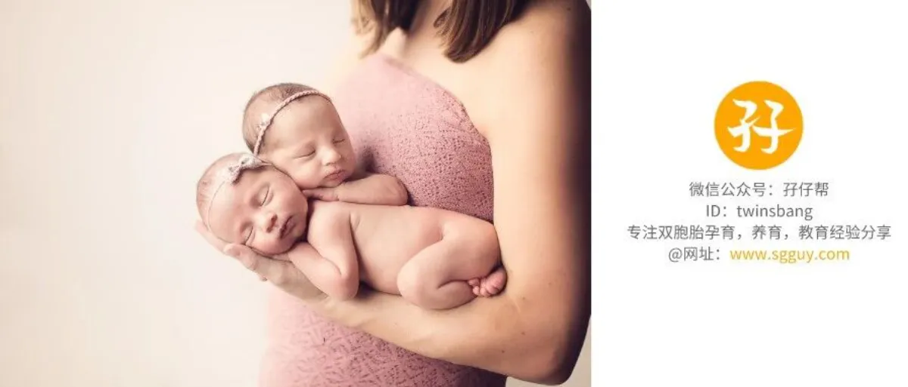
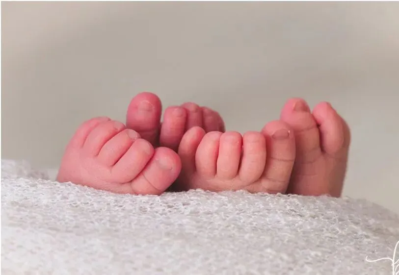
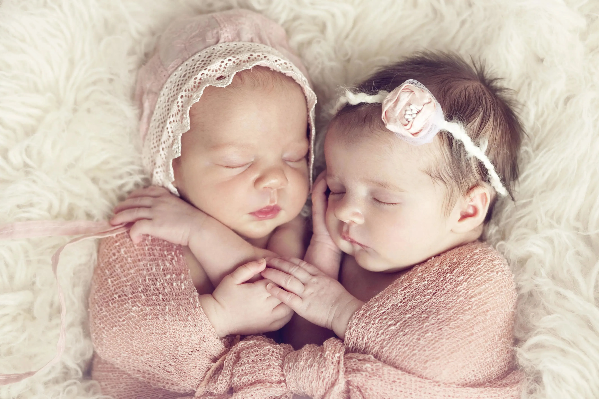

· 正 · 文 · 来 · 啦 ·
【帮主】圆圈妈妈：这是孖仔帮双胎专栏【孖妈来了】的第八篇文章，来自双胞胎奇妙妈妈的分享，这是她和她的龙凤宝宝奇妙兄妹的睡眠故事。
双胞胎多大可以睡整夜觉？这个问题，想当年我也是四处寻找答案，却无功而返，现在有宝妈问我这个问题，我也是一言难尽！
这是个送命题，好伐！？
养育双胞胎的经验，很多都可以拿来参考借鉴，孕期产检参考，囤货分享...唯独双胞胎宝宝的睡眠经验没有参考余地。
这世上所谓的育儿绝招，就是正好用在自己孩子身上有反应而已。
双胞胎奇妙妈妈：我家有龙凤胎8个月大，目前能从晚上10点钟睡到早晨6点钟，中间没有夜醒（偶尔会哼哼唧唧），以上现象持续有2周，且没有睡眠倒退的情况。
我知道好多天使宝宝2月龄就具备睡整夜觉的能力，4月龄就能连续睡6个小时，6月龄就能一觉睡到大清早...
但我的双胞胎不是！
他们现在能保持这种状态，我已经很满足，别无他求了，当双胞胎的妈妈不容易，要求放低点，方能长命。
第一个月
兄妹俩一前一后出院了（36周+出生的，有点吸入性肺炎就放在新生儿科观察了）。
刚出院的前两天，他们睡得多，吃得少，我们按出院小结的医嘱，没敢喂太多。
他们分别睡在两个独立小床上，睡得很好，一点都不哭闹，让我们很受宠若惊，很庆幸被两位天使宝宝砸中。
结果第三天，两个小肉球原形毕露了。
喝完奶后就开始哼哼唧唧，要抱很久才慢慢安静下来，看着像是睡着了，可是放到床上后，没多久又醒了。
白天还好，我们可以轮流抱着他们，当时那股热乎劲，新鲜感还在，哪怕不眠不休，也觉得很想抱。
晚上比较痛苦，因为喝奶不同步（我们是混合喂养），哥哥奇奇喝得快，睡得多，妹妹妙妙喝得慢，总是醒着，哥哥已经睡醒要喝第二轮了，妹妹才刚喝完。
基本上，头一个月，隔一两个小时，吃，睡，吃，睡...我们也被训练得，睡两个小时就能自动睁开眼睛。
第二个月
因为肺炎，他们又一前一后住进了新生儿科，在里面呆了半个月，出院后，照例昏睡了两天，到第三天就特别闹！
虽是出院了，但一直咳嗽，喝奶时吐奶严重，有时会从鼻孔里吐奶出来，口鼻都是奶渍，很恐怖的样子。
看着他们很难受，我们也很心疼，咳嗽导致他们也睡不好，只要放下就哭，哭大了就猛咳，咳到口唇发紫那种，于是哪怕他们睡着了，依然被我们抱在怀里，或者趴在怀里，从来不敢往床上放。
我们4人，我和队友，亲爸亲妈，完全没有休息时间，一直在喂奶，抱娃，拍嗝，哄睡，走动…..
第三个月
支气管炎，在儿科住了10天，出院后老是不明原因哭，猛咳，呛奶，吐奶….没日没夜！
我感觉好沮丧，他们哭的时候，心里一急，自己也跟着哭，为什么他们那么难带，总是生病，老是哭，怎么哄都哄不住？
天气开始转凉，又因为经历了两次住院，亲妈忍无可忍了，说两宝宝是因为没有大人陪着睡，没有安全感才老是生病的，于是强硬把兄妹俩抱她屋里一起睡。
罢了，心力交瘁的我认怂了，两小祖宗只要不哭不闹不生病，怎么样都行，也许，那些育儿绝招真的不适合我家。
第四个月
这个月终于没有生病住院了，但他们睡眠问题愈加严重了，可能是之前被抱惯着睡，现在也是必须抱着才肯睡，放下就会醒，亲妈毕竟年纪大，熬了几个晚上，也累垮了。
我和队友商量了下，觉得不能这样下去，想要着手对兄妹俩进行睡眠训练。可是，老人家不同意，他们听不进去循序渐进的那一套，觉得更麻烦，更累。
我自责自己能力有限，要求又太高，想要改变却又力不从心，要上班要奶娃，强烈的无力感和挫败感让我崩溃极了，不得不面对现实。
第五个月
两个夜哭郎的闹觉情况进入白炽化状态，搅得整屋子人都没觉可睡，轮到我忍无可忍了，既然两宝宝要与大人一起睡，那也必须是跟爸爸妈妈一起睡。
于是我和队友分别带一个睡，决定把睡眠训练提上日程！
也许是他们自然发育的结果，也许是我们的努力初见成效，他们的睡眠有进步了。不再无理由哭闹，作息慢慢同步，夜醒次数在减少，一顿奶喝下去，可以熬3—4个小时。
晚上8点睡，睡到11点醒来，喝一顿奶，可以睡到凌晨3点钟，如果接觉顺利的话，还能继续睡到6点钟，如果不顺利，那就只能抱着娃从4点钟一直熬，熬到5点半，然后就能听到对面菜市场的公鸡在打鸣。
第六个月
有一天晚上，10点钟喝奶，睡到4点钟还没醒来，我吓坏了，以为出啥事，赶紧去探他们的鼻息，还好有气儿。
队友说，我那个从床上弹起来去探鼻息的动作，行云流水，一气呵成，让他终生难忘。
呵呵，他怎么会晓得我这种受宠若惊的心情，习惯被虐，突然一下子对我那么友好，我还能有什么反应呢？
被俩娃如此恩宠过多次后，我渐渐地接受他们可以睡越来越久的事实了。
第七个月
基本上作息同步化，晚上也可以连续睡5--6个小时了，虽然期间会哼哼唧唧地睡不安稳，但是凭经验觉得不需要干预，只是轻轻拍打下后背就行。
妹妹妙妙比较娇气些，必须抱起来哄才行，还好没有折腾多久，看着她的小手往下垂，就知道她已经顺利接觉进入深度睡眠了！
队友经历了两个月的睡眠训练，俨然是个专家一样：“你去睡，我来搞定两个娃！”
第八个月
妹妹居然神奇地从晚上10点钟睡到早晨6点钟，我激动到像中大奖一样喜极而泣，有种重见天日的感觉！
以上是奇妙兄妹的睡眠故事，分享给养育群的新晋妈咪，谈不上经验干货，也可以当反面教材来看（哈哈），分享出来只是想安慰你，大家都是同道中人，你的痛苦，我秒懂，你踩的坑，我也踩过，咱不孤单！
这8个月来，我最大的感慨就是，养育双胞胎根本没有绝招，只有无所不能的意志力和求生欲。孩子没那么难带，没那么难教，对自己别要求太高吧！
在双胞胎宝宝的睡眠训练上，如果已经尽力了，依然没有效果，那就先缓一缓，也许是宝宝们没有准备好，也许是自己太激进。
这本身是个循序渐进的过程，慢慢学会适应，在摸滚带爬中总结经验，然后在合适的机会自救，朝着自己想要达到的目标努力，并付诸行动！
【帮主】圆圈妈妈：最后，我还想补充一下。
前几日，一个“睡眠引导”的微信群聊记录在我们社群刷屏了，大概了解到事情经过后，深深地替那位在睡眠中猝死的宝宝觉得惋惜。
当妈后，每次看到这种信息，心情就特别沉重，看着从小到大一直趴睡，现在依然趴睡的圆圈兄弟，我只觉后怕和庆幸。
我也曾训练过娃，确实是被两只睡渣逼得慌不择路，然而就凭我那种一听小宝宝哭就周身都炸毛的怂样，注定是失败的下场。
庆幸自己当初遵从内心的意愿，并没有过分坚守那些睡眠训练教条，以自己愿意的方式面对他们两兄弟。
比起所谓的睡眠引导和睡训大师，我更愿意相信自己做母亲的直觉，孩子哭了，说明他需要我，而我也需要他，那就抱他吧，哄他吧，这还需要理由吗？还需要问“老师”吗？
正如网上一位妈妈说的那样：
说真的，一个孩子打扰大人睡觉也就那么一两年，或者五六个月，每个孩子的情况不一样，但是每个孩子又都一样，到大了，你想他打扰你都难了。
为人父母，是一场情感之旅，哄孩子入睡甚至被孩子的哭闹所困扰，这本身就是为人父母这一美好而艰辛历程的一部分，若干年后，那些被孩子们搅得不眠不休的夜晚，将会是一段最甜蜜最美好的回忆！
-END-
作者/奇妙妈妈
排版/圆圈妈妈
写手招募
如果你是爱分享的双胞胎爸爸或妈妈
欢迎投稿至孖仔帮【双胎专栏】
分享出你和双胞胎的成长故事
添加微信sgguy-com
备注“投稿”
-END-
今日互动话题
#你家双胞胎的睡眠训练成功了吗#
评论区聊一聊呗！
微信公众号：孖仔帮
ID : twinsbang
专注双胞胎孕育，养育，教育经验分享
@www.sgguy.com
扫码关注我们
我知道你在看哟


